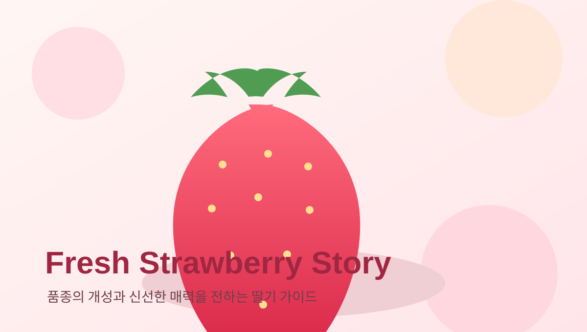

오늘의 추천 품종
버튼을 누르면 대표 딸기 품종 중 하나를 골라 풍미와 특징을 바로 확인할 수 있습니다.
추천 버튼을 누르면 이곳에 품종 이미지와 설명이 표시됩니다.
한눈에 보는 딸기 매력
딸기는 산뜻한 향, 선명한 색, 부드러운 과육으로 디저트와 선물용 모두에 잘 어울립니다.

딸기의 장점
- 상큼한 산미와 은은한 단맛이 조화를 이루어 남녀노소 부담 없이 즐길 수 있습니다.
- 과육이 부드럽고 향이 좋아 생과, 음료, 디저트, 선물 세트까지 활용 범위가 넓습니다.
- 붉고 선명한 색감이 뛰어나 진열 효과가 좋고 브랜드 이미지를 신선하게 전달합니다.
- 계절감을 또렷하게 보여주는 과일이라 시즌 마케팅과 프리미엄 포장에 특히 잘 맞습니다.
이 사이트 활용 방법
- 먼저 추천 품종 카드에서 맛과 향의 방향을 빠르게 확인합니다.
- 아래 품종 소개 섹션에서 품종별 차이를 비교합니다.
- 보관 방법과 납품 문의가 필요하면 FAQ와 문의 페이지를 이어서 확인합니다.
대표 딸기 품종 소개
설향
국내에서 가장 친숙한 품종 중 하나로, 부드러운 과육과 균형 잡힌 단맛 덕분에 대중성이 높습니다.
금실
깔끔한 단맛과 밝은 과색이 인상적이며, 산뜻한 첫인상이 필요한 프리미엄 패키지에 잘 어울립니다.
킹스베리
큰 과형과 존재감 있는 비주얼이 강점이며, 선물용이나 디저트 토핑에 고급스러운 인상을 줍니다.
죽향
진한 향과 깊은 풍미가 특징으로, 향 중심의 소비 경험을 중요하게 보는 고객에게 잘 맞습니다.
좋은 딸기를 고르는 기준
꼭지 색이 선명하고 과실 표면에 윤기가 있으며, 과육이 지나치게 무르지 않은 딸기가 신선도 측면에서 유리합니다. 향이 또렷한지, 크기가 일정한지, 상처가 적은지도 함께 살피는 것이 좋습니다.
품종별 비교표
단맛, 향, 과형, 추천 용도를 표로 비교한 페이지에서 품종 차이를 더 쉽게 확인할 수 있습니다.
품종 비교 페이지 열기브랜드 활용 포인트
- 설향은 대중형 메인 상품으로, 킹스베리는 프리미엄 라인으로 구성하면 포트폴리오가 선명해집니다.
- 향을 강조할 때는 죽향, 밝고 깔끔한 이미지를 원할 때는 금실을 전면에 두는 구성이 좋습니다.
- 패키지 문구에는 산지, 수확 시기, 보관 안내를 함께 넣으면 신뢰감이 높아집니다.
신선도 안내
딸기는 신선식품이므로 수령 후 빠른 냉장 보관이 중요합니다. 세척은 섭취 직전에 하고, 눌림을 줄이기 위해 층간 압박을 최소화하는 것이 좋습니다.
딸기 용어집
과형
딸기의 전체 모양과 크기를 뜻하며, 진열과 선물용 만족도에 영향을 줍니다.
당산비
당도와 산도의 균형을 의미하며, 체감되는 맛의 완성도를 판단할 때 자주 언급됩니다.
향미
입안에서 느껴지는 향과 맛의 종합적인 인상을 말하며, 품종 차이를 설명할 때 핵심 요소입니다.
보관과 배송 FAQ
신선도 유지, 냉장 보관, 선물 포장 관련 질문을 FAQ 페이지에 정리했습니다.
FAQ 페이지 열기납품 및 협업 문의
카페, 디저트 브랜드, 유통사 협업 문의는 별도 페이지에서 접수할 수 있습니다.
문의 페이지 열기